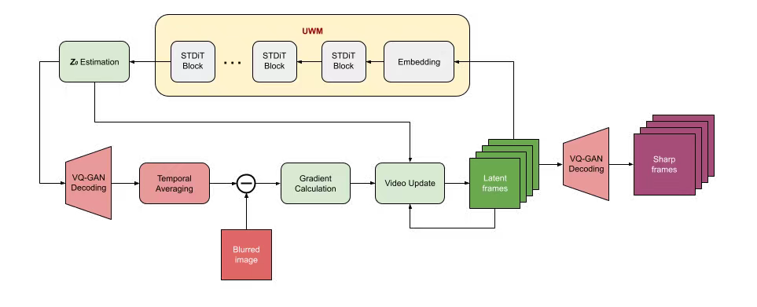
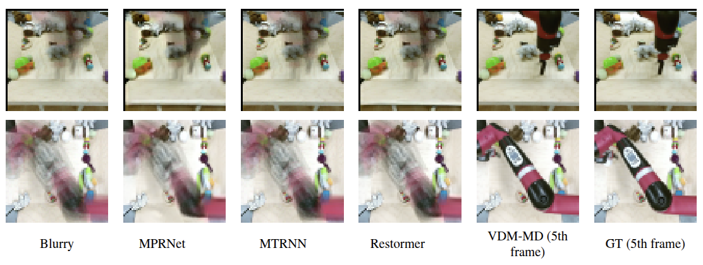

Most deblurring algorithms rely on spatial-domain convolution models, which struggle with the complex, non-linear blur arising from camera shake and dynamic object motion. In contrast, we propose a novel single-image deblurring approach that treats motion blur as a temporal averaging phenomenon. Our core innovation lies in leveraging a pre-trained unconditional video diffusion model to capture diverse motion dynamics within a latent space. By operating in this latent domain, our method sidesteps explicit kernel estimation and effectively accommodates rotations, occlusions, and heterogeneous movements. We implement the algorithm within a diffusion-based inverse problem framework, which iteratively refines a latent video representation until it converges to sharp frames that reconstruct the input image. Empirical results on synthetic and real-world datasets demonstrate that our method outperforms existing techniques in deblurring complex motion blur scenarios. This work paves the way for utilizing powerful video diffusion models to address single-image deblurring challenges, offering a flexible and efficient solution for handling diverse motion patterns.

Overview of the Unconditional World Model based Motion Deblurring (UWM-MD): In the core iteration, the estimated 3D sharp video resides in the latent space, represented by green boxes. It is generated and refined by the UWM, which includes several STDiT blocks. The latent video is then decoded and compared with the blurry image through the degradation model, indicated by red boxes. Their discrepancies are used to correct and enhance the video. Upon completion the latent video is decoded back to the visual space.
Motion blur removal on the CLEVRER datasets. Original FPS.
Taichi-HD
FaceForensics
SkyTimelapse
Motion blur removal on the CLEVRER datasets. Downsampled FPS.
Taichi-HD
FaceForensics
SkyTimelapse
Motion blur removal on the BAIR datasets.
Taichi-HD
FaceForensics
SkyTimelapse
Compare.
